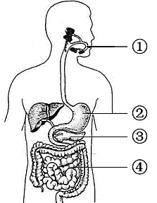
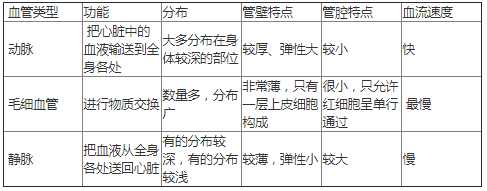
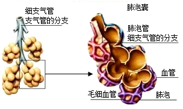

2026年北京平谷区初中学业合格考试生物试卷 · 选择题 第11、12、13、14、15题 · 对应解析
11. 如图为人体消化系统结构模式图。下列叙述不正确的是

A. 淀粉在①中被彻底消化成葡萄糖
B. 蛋白质在②处被初步消化
C. ③分泌的消化液含消化淀粉、脂肪、蛋白质的酶
D. 脂肪在④中开始被消化
【答案】A
【解析】
【分析】人体的消化系统包括消化道和消化腺两部分；消化道包括口腔、咽、食道、胃、小肠、大肠、肛门；消化腺主要有唾液腺、胃腺、肠腺、胰腺、肝脏等，肝脏是人体内最大的消化腺。图中结构：①是口腔，②是胃，③是胰腺，④是小肠，据此解答。
【详解】A．淀粉的消化从①口腔开始，口腔中的唾液淀粉酶能够将部分淀粉分解为麦芽糖，当淀粉和麦芽糖进入小肠后，被彻底消化为葡萄糖，A错误。
B．②胃内只含有胃液，胃液中含有能够初步消化蛋白质的胃蛋白酶，可初步消化蛋白质，B正确。
C．③胰腺分泌的消化液含有多种消化酶，对淀粉、蛋白质和脂肪三种物质都有消化作用，C正确。
D．脂肪的消化开始于④小肠，最终分解为甘油和脂肪酸，D正确。
故选A。
【点睛】明确各消化器官的结构和功能是解题的关键。
12. 日常体检时，医生常用橡皮软管扎紧上臂，然后在血管鼓胀处抽血。针刺入的鼓胀处位于橡皮软管
A. 软管与手之间的静脉B. 软管与肩部之间的静脉
C. 软管与手之间的动脉D. 软管与肩部之间的动脉
【答案】A
【解析】
【分析】血管的类型和功能如下表：

【详解】在静脉血管内，血液是从远心端流向近心端的，用乳胶管扎紧上臂后，在结扎处的远心端的静脉会因血液滞留而膨大，同时，又因静脉内具有防止血液倒流的静脉瓣，所以血液不会倒流而会出现结状突起。所以在抽血或输液时，要在针刺入的部位的上方（近心端）用橡皮管捆扎紧起来，其原因是减缓或暂时阻止血液向心流动，让软管与手之间的静脉鼓胀起来，便于针刺入。
故选A。
【点睛】对于血管的结构和功能，可通过列表比较这三种血管。
13. 坚持一段时间的适度运动，血液中红细胞数量会增多，这有利于
A. 运输氧气B. 止血凝血
C. 产生氧气D. 吞噬病菌
【答案】A
【解析】
【分析】血液的组成包括血浆和血细胞，血细胞包括红细胞、白细胞和血小板。红细胞富含血红蛋白，血红蛋白是一种红色含铁的蛋白质，它在氧浓度高的地方与氧结合，在氧浓度低的地方与氧分离。
【详解】运动一段时间后，机体对氧气的需求量增加高。此时，身体会做相应的调节，血液中的红细胞数量的含量会增加，这样参与运输氧的红细胞的数量增多，可以运输更多的氧，来满足人体对氧气的需要，A符合题意。
故选A。
【点睛】熟知红细胞的功能是解答本题的关键。
14. 肺的功能单位是
A. 呼吸性细支气管B. 细支气管C. 肺泡管D. 肺泡
【答案】D
【解析】
【分析】
肺是呼吸系统的主要器官，是气体交换的场所。左右支气管进入左右两肺后反复分支，愈分愈细，形成许多树枝状的分支，分支到细支气管时，管壁的软骨环消失，管壁几乎全部由平滑肌构成，细支气管再分支到呼吸性细支气管时，其管壁的某些部分向外突出形成肺泡。肺泡是肺的功能单位，与呼吸性细支气管相通，壁很薄，由一层上皮细胞构成。
【详解】肺的功能是进行气体交换，而肺进行气体交换的场所是肺泡，因此肺泡是肺的功能单位，同时，从肺的结构来看，肺泡又是肺的结构单位，如图所示：

。故选D。
【点睛】肺泡是肺的功能和结构单位。理解肺是由大量的肺泡组成。
15. 人在溺水时，首先受到阻碍的呼吸过程是（ ）
A. 肺与外界的气体交换B. 肺泡与血液间的气体交换
C. 气体在血液中的运输D. 血液与组织细胞间的气体交换
【答案】A
【解析】
【分析】呼吸过程包括四个环节：肺与外界的气体交换（肺通气）、肺泡与血液间的气体交换、气体在血液中的运输、血液与组织细胞的气体交换。
【详解】A．溺水时，水进入呼吸道，直接阻塞空气进出肺部的通道，导致无法进行肺通气（即肺与外界的气体交换），这是呼吸过程的第一步，故A符合题意。
B．肺泡与血液间的气体交换需在空气进入肺泡后才能进行，此时因肺通气受阻，此步骤尚未发生，故B不符合题意。
C．气体在血液中的运输需氧气进入血液后才发生，此时氧气未进入肺泡和血液，故C不符合题意。
D．血液与组织细胞的气体交换是最后一步，此时氧气尚未运输到组织细胞，故D不符合题意。
故选A。